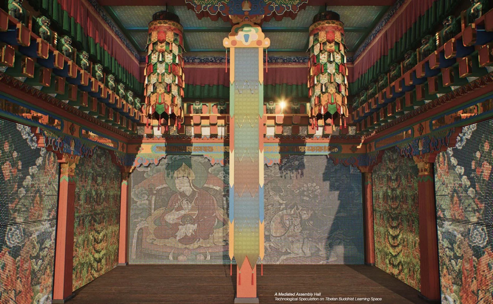

Visual Designer · Spatial Artist
Creative Technologist
Form.
Image.
Experience.
One visual practice, moving between objects, spaces, images and systems.
Explore selected work 01—04 ↓
Across media, through making
From the proportion of a sculpture to the rhythm of a film, I work with how things are formed, seen and experienced. Drawing, spatial design and technical experimentation connect research to a visual and physical outcome.
Selected works
Four perspectives on one practice01Research · Spatial media
Sacred Intelligence
Cultural practice translated through form, imagery and shared making. A spatial proposal explores how Tibetan Buddhist knowledge can acquire a physical, collective presence across distance.
Research becomes a visual system
Continuity across distance.
Religious spaces at Gonggar and spaces in London are connected through proposed encounters of making, teaching and meditation. Cultural dialogue informs the imagery, geometry and settings of the project.
Weighted spatial datasets produce fields of convergence and divergence. These are exploratory scenarios shaped by the model’s assumptions, rather than predictions of the site.
Making, translation and physical tests +
From geometry to material.
Mandala forms are decomposed and classified for algorithmic transcription. Successive sand-dispensing prototypes test colour separation and line formation; an operational 1:1 head combines four independent sand channels.
Two operational prototypes were presented to senior Buddhist teachers during fieldwork in Tibet, informing the proposals for remote exchange.
Technical implementation
Real-time 3D, procedural workflows and physical prototypes support the visual practice. The CV documents Unreal Engine, Blueprints, Houdini, Grasshopper, Pixel Streaming and interactive systems alongside modelling and Adobe production tools.
02Moving image · Kinetic form
Light Up New York
for But a Moment
A speculative annual ritual turns advertising into a temporary urban architecture. Film, drawing and physical prototyping explore the relationship between media, spectacle and public space.
Selected for PANIC: Ars Electronica Animation Festival 2025 and Animation Festival on Tour 2026.
Sequence · Spectacle · Space
A billboard you can enter.
Advertising leaves the façades of Times Square and gathers into a moving media structure. Over an imagined New Year’s Eve, it shifts between strange creature, commercial architecture, performance stage and luminous ball.
Framing, light and editing make the transformation legible as an urban narrative. Behind the image, physical models investigate movement and occupation.
Drawing and kinetic development +
03Professional practice · 2023–24
Foster + Partners
Visual judgement in a collaborative professional setting: refining spatial relationships, coordinating design information and communicating proposals through drawings, models and images.
1 Spitalfields
I contributed to façade refinement, central atrium studies, landscape design and market planning, alongside models and visualisations. Coordinated Revit drawings supported development of the building and East Canopy connection.
Foster + Partners · Studio 1 · Team project
RECC and 8 Canada Square +
RECC
At RIBA Stage 2, I contributed to massing, major spatial geometries, the mezzanine canopy and sunken communal areas within a team of more than twenty. A Grasshopper-based shading study tested geometric variations for the façade strategy.
8 Canada Square
I took primary responsibility for the Revit model and cinematic visualisation within the competition team. The images communicate proposed exhibition and observation spaces at the Tower Top, connecting interior atmosphere with views across the city.
04Sculpture · Drawing · Spatial studies
Thinking through making.
Selected artistic studies connect the hand, the eye and the material. This is the foundation that carries across my work in architecture, moving image and interactive systems.
A foundation in form
Sculpture and hand drawing are a continuous part of my work. Observational studies and spatial constructions inform how I judge proportion, material character and the relationship between an object and its surroundings.
About
Zhuyuan Liu
Visual Designer · Spatial Artist
Creative Technologist
My practice connects sculptural training, architectural thinking and moving image with computational and physical experimentation. I work across composition, spatial relationships, visual narrative and the systems that bring an idea into experience.
Available October 2026.
Full right to work in the UK; no sponsorship required.
Experience
- 2023–24
- Foster + PartnersPart 1 Architectural Assistant
- 2022–26
- Amateurist StudioCo-founder · product, visual design and immersive concert stage for YEANA
Education
- 2024–26
- AA School of ArchitectureMArch Architecture · RIBA Part 2
- 2020–23
- AA School of ArchitectureBA (Hons) Architecture · RIBA Part 1
- 2014–18
- Academy of Arts & Design, Tsinghua UniversityBA Sculpture
Selected recognition +
- 2026 · AA Diploma Honours Nomination
- 2025–26 · Ars Electronica film selection & Animation Festival on Tour
- 2024 · AA Scholarship
- 2023 · AA Travel Bursary
- 2019 · Award of Merit, Digital Art Exhibition, Tsinghua University
Read in depth